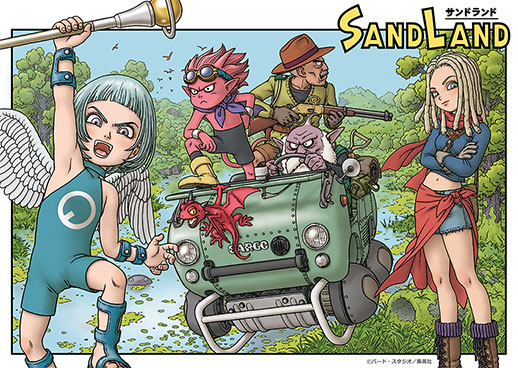

SandLand, del mestre Akira Toriyama, ens submergeix en un món devastat on l'aigua és un tresor escàs.
Seguim les peripècies d'un jove guerrer i del seu peculiar company, un diable vellutat, en una recerca desesperada de l'element vital.
Amb el seu estil únic i una trama plena d'acció, aquest manga captiva amb cada pàgina,
oferint una experiència única als lectors aficionats a les aventures emocionants.
